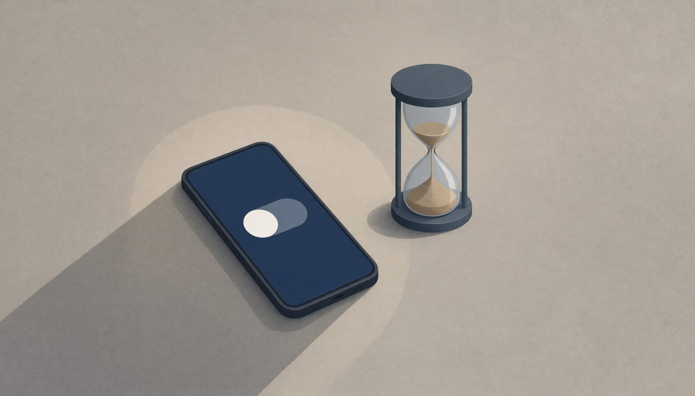

Opinion
Meta's €805 million fine is not enforcement yet
The Italy ruling counts only if the consent fix is delivered within 60 days, and holds through the appeal Meta will file.

Italy's data-protection authority, the Garante, fined Meta Platforms Ireland €805 million on 14 November 2026 for a Facebook feature that reached into the photo galleries of about 20 million Italians' Android phones without their specific consent. The law behind the ruling, article 122 of the Italian privacy code, which carries the European ePrivacy directive, requires free and informed consent before an app touches the telephone; the smartphone stands as an extension of a person's private sphere. Within 60 days Meta must request consent with a separate, specific request for the feature, clearly explain what it involves and how to disable it, and keep the feature off by default. A fine that appeals can outlast is not enforcement yet.
The record shows how Meta met that rule in practice. Since 2023 the 'Get tips from your gallery while browsing Facebook' feature has suggested photos and videos from users' phones as material to post, and the Garante's technical analysis found that access is sought with a single permission valid for the whole app and several functions at once, announced by a generic notice about enabling other features that never let a user understand they were also authorising gallery suggestions. The permission, granted in full, lets the app read the device's entire photo archive, usually permanently, without the user or any authority able to verify what was taken. One switch for the whole app cannot be specific consent for each of the things it switches on.
Meta argued that only the Irish regulator was competent; the Garante rejected the claim because the ePrivacy rules provide no one-stop-shop mechanism for this file. The Garante sized the fine at about 0.47 percent of Meta's global revenue and noted that the violation is still ongoing for users who have not updated the app. In New Mexico, a US judge in October 2026 ordered Meta to pay $25 billion, about €23 billion at the ECB euro reference rate of 13 November, after finding it had spent years lying to the public about how it handled Facebook user data. Where a regulator chooses to fight, the price of a privacy record is not a rounding error on a quarterly revenue report.
Meta says the gallery-suggestion feature is straightforward: people grant permission on their device and can change it at any time, so the Garante's €805 million fine is disproportionate. The Garante's 60-day deadline gives that claim its test, because a remedy of the simplicity Meta describes can be delivered in full within it. Meta will appeal, and a single regulator's timetable is what an appeal is built to outlast, so compliance within the deadline, not the appeal's progress, must be the measure. The remedy must stand as a delivered fact by the deadline, with reports of what Meta has done at 30 and 90 days. Because no one-stop-shop applies here, the European Commission should confirm now that national authorities in other member states can open files on the same feature while the appeal runs, and the European Parliament should schedule its Digital Omnibus vote before the 60 days run out.